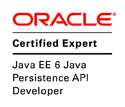
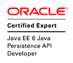

Spring - Advanced
Advanced topics for Spring framework
[Internal training by ACE Academy]
Created by Havelka Arnošt
About me
- ACE employee: since 6/2009
- Job title: Solution Architect / Head of SW development
- Division: Public CZ
- Certifications:

 


Agenda
- Spring basics - overview
- BFPP & BPP
- Spring Boot - basics
- AOP
- Persistence (JDBC/JPA/JTA and transaction)
- Remoting & WS
- JMS
- JMX
1. Spring basics - overview
TODO
- Concept
- Application configuration
- Profiles
- Java Specifications (JSR-250, JSR-303 and JSR-330)
- Testing
1.1 Concept
- Overview
- Inversion of Control
- Spring configuration
- Namespace P and C
- Abstract definition
- SpEL
1.1.1 Overview
- Goal:Provide comprehensive infrastructural support for developing enterprise Java applications
- Core support:
- Application Configuration
- Enterprise Configuration
- Testing
- Data Access
1.1.2 Inversion of Control (IoC)
Ioc is approach that is implemented by design pattern called Dependency injection.
Property (setter) based
@Service
public class MyService {
@Autowired
private MyDao dao;
}Constructor based
@Service
public class MyService {
private MyDao dao;
@Autowired
public MyService(MyDao dao) {
this.dao = dao;
}
}1.1.3 Spring configuration
XML
<?xml version="1.0" encoding="UTF-8"?>
<beans xmlns="http://www.springframework.org/schema/beans" xmlns:p="http://www.springframework.org/schema/p">
<context:component-scan base-package="aha.poc" />
<bean id="myService" class="somepackage.MyService" p:dao-ref="myDAO"/>
</beans>JavaConfig
@Configuration
@ComponentScan(basePackages = "aha.poc")
@EnableAutoConfiguration
@EnableScheduling
public class Application {
@Bean
public TaskScheduler taskExecutor() {
return new ThreadPoolTaskScheduler();
}
}1.1.4 Namespace P and C
Namespace P (for properties/setters)
<?xml version="1.0" encoding="UTF-8"?>
<beans ... xmlns:p="http://www.springframework.org/schema/p">
<context:component-scan base-package="aha.poc" />
<bean ... p:msg="Message value" p:dao-ref="myDAO"/>
</beans>Namespace C (for constructors)
<?xml version="1.0" encoding="UTF-8"?>
<beans ... xmlns:c="http://www.springframework.org/schema/c">
<context:component-scan base-package="aha.poc" />
<bean ... c:_0="My Value" c:_1-ref="myDAO"/>
</beans>1.1.5 Abstract definition
<?xml version="1.0" encoding="UTF-8"?>
<beans xmlns="http://www.springframework.org/schema/beans" ...>
<bean id="defBean" class="somepackage.AbstractComponent" p:user="sys" p:password="sys" abstract="true"/>
<!-- instantiate bean "defBean" -->
<bean id="ABean" parent="defBean" p:url="http://host:8080/abc/"/>
<!-- instantiate and override password" -->
<bean id="BBean" parent="defBean" p:password="abc" p:url="http://host:8080/abc/" />
<!-- instantiate and override user and password -->
<bean id="CBean" parent="defBean" p:user="admin" p:password="xyz" p:url="http://host:8080/abc/" />
</beans>1.1.1 SpEL
- Reference bean
@Value("#{customBean.message}") private String foo; - Invoking methods, do mathematical, relational and logical operations on values
@Value("#{T(java.lang.Math).random()}") private Double value; @Value("#{counter.total+42}") private Integer value; - Regular expression matching
@Value("#{admin.email matches '[a-zA-Z0-9._%+-]+@[a-zA-Z0-9.-]+\\.com'}") private String email; - Collection manipulation
<property name="chosenCity" value="#{cities[2]}" />
1.2 Application configuration
TODO
- Place holder
- Place override
1.3 Profiles
TODO
- XML Configuration
- Annotation Configuration
- Custom annotation (for configuration)
- Example of usage
1.4 Java Specifications
TODO
- JSR-250 - Semantic concept
- JSR-303 - Bean Validation
- JSR-330 - Dependency Injection for Java
1.5 Testing
TODO
- Basic Spring test
- Usage of profiles (@ActiveProfiles, @IfProfileValue)
- Special annotations (@Timed, @Repeat)
2. BFPP & BPP
- Spring life-cycle
- BFPP
- BPP
2.1 TODO
- aaa
- aaa
- aaa
3. ???
TODO
- aaa
- aaa
- aaa
- aaa
4. Spring Boot - basics
TODO
- aaa
- aaa
- aaa
- aaa
5. AOP
TODO
- aaa
- aaa
- aaa
- aaa
6. Persistence (JDBC/JPA/JTA and transaction)
TODO
- aaa
- aaa
- aaa
- aaa
7. Remoting & WS
TODO
- Overview
- Spring HTTP Invoker
- JAX-WS
8. JMS
TODO
- aaa
- aaa
- aaa
- aaa
9. JMX
TODO
- aaa
- aaa
- aaa
- aaa